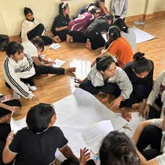

Sức khoẻ
Quan tâm đến thể chất, tinh thần và lối sống lành mạnh.
SỨC KHOẺ · NHÂN BẢN · KỸ NĂNG · TRI THỨC · ĐỨC TIN
Nhà Nội Trú Anphongsô thuộc Dòng Chúa Cứu Thế, hướng tới xây dựng một môi trường giáo dục chú trọng sự phát triển toàn diện của con người.
Giáo dục còn là hành trình hình thành nhân cách, phát triển năng lực, nuôi dưỡng đời sống tinh thần và xây dựng tinh thần trách nhiệm với cộng đồng.
Nhà Nội Trú Anphongsô hướng đến sự hài hòa giữa năm phương diện: Sức khoẻ, Nhân bản, Kỹ năng, Tri thức và Đức tin.

Hướng tới xây dựng một môi trường giáo dục nơi mỗi người được phát triển hài hòa về sức khoẻ, nhân cách, kỹ năng, tri thức và đời sống đức tin.
Tạo điều kiện để mỗi người học tập, rèn luyện, khám phá tiềm năng và hình thành tinh thần trách nhiệm đối với bản thân và cộng đồng.
Sức khoẻ – Nhân bản – Kỹ năng – Tri thức – Đức tin là năm phương diện định hướng cho hành trình giáo dục và phát triển toàn diện.
Những hình ảnh ghi lại các hoạt động và sinh hoạt tại Nhà Nội Trú.


Năm phương diện trong định hướng giáo dục toàn diện.
Quan tâm đến thể chất, tinh thần và lối sống lành mạnh.
Tôn trọng phẩm giá con người, lòng nhân ái và trách nhiệm.
Phát triển năng lực giao tiếp, hợp tác và giải quyết vấn đề.
Khuyến khích học tập, tư duy phản biện và khám phá.
Nuôi dưỡng đời sống tinh thần, đức tin và tình yêu thương.